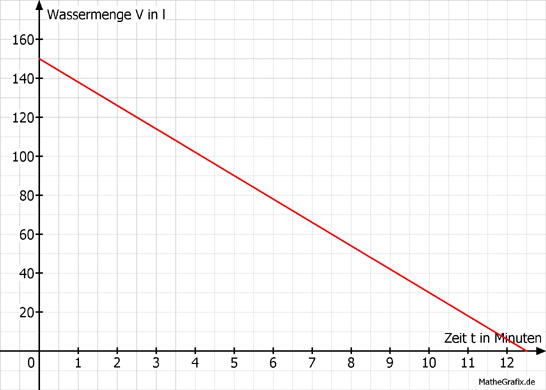

Lineare Funktionen Aufgabe 104 In einer Badewanne befinden sich 150 l Wasser. Es laufen 12 l Wasser pro Minute ab. a) Wie viel Liter Wasser befinden sich nach 12 Minuten in der Wanne? b) Nach wie viel Minuten ist die Wanne leer? c) Nach wie viel Minuten sind noch 90 l in der Wanne?  a) Die Abhängigkeit des Wasservolumens V von der Zeit t lautet: V = 150 - 12 * t V(12) = 150 l - 12 l/min * 12 min = 6 l b) 0 = 150 - 12 * t | +12 t 12 t = 150 | :12 t = 12,5 min c) 90 = 150 - 12 * t | -12 t 12 t + 90 = 150 | -90 12 t = 60 | :12 t = 5 min